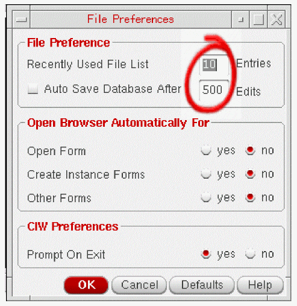

Shortcuts for Improving Productivity
This document describes shortcut methods to improve your productivity while creating or editing a schematic. These methods can be deployed for editing functionality in any of the available tiers of Virtuoso Schematic Editor (VSE), L or XL.
The following diagram shows how the shortcut methods of improving productivity while creating or editing a schematic fit in the overall Virtuoso Design Flow:
Editing Canvas
Creating Schematic Using Mouse Drag
-
Use
shift + mouse dragto create a wire from a pin.
-
Use
mouse dragto stretch the instance or wire.
-
Use
Shift + mouse dragto copy the instance or wire.
-
Use
Ctrl + mouse dragto move the instance or wire.
Adding Arrays of Instances
-
In the Add Instance form, specify the array size in the Rows and Columns fields.
- Place the first instance on the schematic canvas and the vertical part of the array appears.
-
Then, place an instance horizontally and the horizontal part of the array appears.
Creating Wire Labels
In the Add Wire Name form, enable Bus Expansion to automatically create a wire label with the expanded bus name and connect the bus name to the wire.
Labeling Multiple Wires
To label multiple wires simultaneously, perform the following steps:
- Add names of the wires in the Names text field of the Add Wire Name form.
- Click multiple to define the Placement option.
-
Click the first wire and drag the mouse over the other wires.
Annotating Differences in Symbol Views
If you modify a symbol view, the changes from the last save are annotated on the schematic.
Using Probes Assistant
- Use the assistant to trace the probed nets on the design canvas.
- Use the assistant options to view the probed path and the library:cell information of the probes.
- Apply cross-selection from and to the assistant, where selecting a probed net in the assistant causes the same probed net to be highlighted both in the design and in the Navigator Assistant.
-
Use the assistant to save the probe paths to a file.
- For a short video overview of some of the canvas editing methods, view Shortcuts Methods for Improving Productivity (Editing Canvas).
- View Identifying Net Connections to see how to use the Probes Assistant to identify connections that exist for a net and to save probe path information to a CSV file.
Customizing
Using Auto Save Option
Auto save option is available in Virtuoso for saving the schematics and other types of cellview. You can turn on the Auto Save mode in any of the following ways:
Set dbSetAutoSave(t) in .cdsinit or CIW. t refers to the auto save interval, and it is specified in terms of the number of database modifications since last auto save rather than a time duration.
Choose File Preferences from the Options menu in the CIW. Select the Auto Save Database After option in the File Preferences form. You can define the auto save interval in the …Edits text field.
Examples
-
By default, if you define the automatic save option, the data is saved automatically after every 500 database edit actions.
dbSetAutoSave(t)
 -
You can set the automatic save option so that data is saved automatically after every 100 database edit actions.
dbSetAutoSave(t 100)
-
Turn off the automatic save option.
dbSetAutoSave(nil)
Controlling Default Settings for Descending
The following variable can be set in the .cdsinit file to ensure that descending into an instance always opens in a new tab, current tab, or new window.
-
envSetVal("schematic" "descendCanvasType" 'string "new tab") -
envSetVal("schematic" "descendCanvasType" 'string "current tab") -
envSetVal("schematic" "descendCanvasType" 'string "new window")
Viewing a Cell in Two Windows Simultaneously
To view a cell in two windows, with different zoom and pan settings, simultaneously, click Window -> Copy Window. As a result,
- A copy of the current cellview opens in a new window.
- The copy has the same title as the original.
- Any change made in either of the windows affects both windows.
Customizing Workspace
Customize workspace to show your preferred assistants and toolbars.
- Create your own cockpit with the combination of assistants and toolbars.
- Click Window->Workspaces->Save As... or click to save your workspace.
Your saved workspace will be available in the Workspace Configuration drop down.
Positioning CIW User Preferences – Docked Window Tab
In CIW, click Options->User Preferences to open the User Preferences form.
- Only affects docked windows on left and right sides of the canvas
-
Useful for docked windows with long names
Placing Assistants in Schematic Editor
- Tab various assistants together by dragging them on top of each other.
- Move the assistant around the canvas and place on the top/bottom/left/right.
-
Continue to press
Ctrlwhile moving the assistants around the canvas.
Setting Colors and Backgrounds
Customizing Canvas Color
The canvas color can be customized. This change affects the Layout.
-
In your home directory, open or create a file called
.Xdefaults. -
Enter the following command and save the file.
Opus.editorBackground: white
-
Then, in your xterm, reread the .Xdefaults using the following command:
xrdb -merge ~/.Xdefaults
- Launch Virtuoso to view the white canvas.
-
You can choose other colors too by specifying the hex value.
Setting Cellview as Background
Use the following function to specify the library/cell/view for the background.
geBackgroundCellView()
Highlighting Views in Different Colors
To highlight various views in different colors,
- Start Hierarchy Editor.
- Choose Hierarchy-Editor -> Show Views Found.
-
In the Show Views Found form, highlight all views (such as schematic, extracted, spectre, and so on) in different colors on the schematic.
Exporting Images with Colored Backgrounds
To export images with colored backgrounds, do the following:
- In the schematic editor, choose File->Export Image.
- In the Export Image window, choose Foreground color in the Appearance group box.
-
Click Save to File.
Using Bindkeys
Descending Using Bindkeys
To descend into a block, you can use the following bindkeys:
-
‘
E’ – For viewing the block -
‘
Shift + E’ – For editing the block -
‘
Ctrl + E’ – For returning to the top-level block
Zooming/Panning Using Bindkeys
Launching Options Form Using Bindkeys
When running any of the following commands, press F3 to bring up the Options form for that command.
Next Step
For more information about creating schematics, see
Return to top